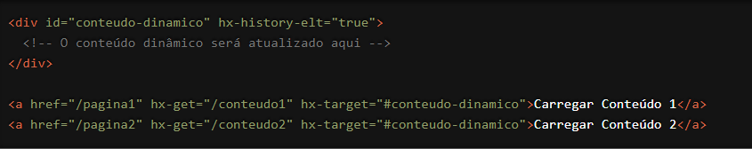

Estamos entusiasmados para apresentar a você uma funcionalidade do HTMX que permite um controle refinado sobre o histórico de navegação do navegador: o atributo `hx-history-elt`.
Com `hx-history-elt`, você pode designar um elemento específico para gerenciar o histórico de navegação, proporcionando uma experiência de usuário mais consistente e previsível. Vamos explorar como essa funcionalidade pode transformar suas interações web.
O que é o atributo `hx-history-elt`?
O `hx-history-elt` é um atributo do HTMX que identifica o elemento do DOM que deve ser
usado para armazenar o estado do histórico de navegação. Isso é especialmente útil para
aplicações que requerem controle detalhado sobre o histórico, como páginas que utilizam
navegação AJAX para atualizar partes da interface sem recarregar a página inteira.
Como Funciona?
Vamos ver um exemplo prático para entender melhor como o `hx-history-elt` pode ser usado.
Suponha que você tenha uma área de conteúdo que deve ser atualizada dinamicamente e
você deseja que o histórico de navegação reflita essas mudanças:

Neste exemplo, o elemento `<div id="conteudo-dinamico">` está marcado com `hx-history- elt="true"`, o que significa que ele será usado para armazenar o estado do histórico. Quando os links são clicados, o conteúdo do `#conteudo-dinamico` é atualizado via AJAX e o histórico de navegação é gerenciado automaticamente, permitindo que o usuário use os botões de voltar e avançar do navegador para navegar entre os estados.